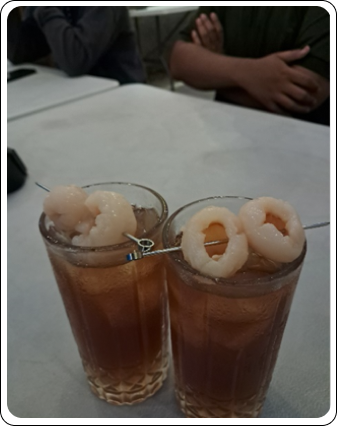

Damar Cafe
Damar Jogja adalah cafe yang berada di area Kota Yogyakarta dan
lokasinya terletak berdekatan dengan beberapa tempat wisata di
Jogja seperti Keraton, Malioboro, Museum Vrendeburg, dan masih
banyak lagi. Cafe ini bertema vintage dengan suasana jadul yang
sangat nyaman dan homey. Dinding-dindingnya dihiasi dengan
poster-poster film jadul, jam dinding antik, dan berbagai macam
pernak - pernik, sehingga membuat suasana di cafe cafe tersebut
terasa seperti di rumah nenek.
Tentang Menu
Cafe ini menyediakan berbagai macam menu makanan serta minuman
yang beragam, mulai dari kopi dengan berbagai varian, teh,
softdrink hingga makanan ringan seperti kue tradisional dan
sandwich, ada juga makanan lainnya seperti nasi goreng, omelet dan
lain - lain. Harganya pun cukup terjangkau, sehingga cocok untuk
semua kalangan.

Fasilitas Damar Cafe
Fasilitas yang disediakan Damar Jogja cukup lengkap, seperti
wi-fi gratis, colokan listrik, toilet beserta tempat wudhu,
dan juga ruangan untuk sholat. Pengunjung juga bisa membawa
buku atau laptop untuk bekerja dan mengerjakan tugas, atau
hanya sekadar bersantai sambil menikmati suasana cafe.
Lokasi
Alamat cafe ini lebih tepatnya terletak di Jl. Masjid No.1,
Gunungketur, Pakualaman, Yogyakarta, Daerah Istimewa
Yogyakarta. Damar Jogja adalah tempat yang sempurna untuk
melepas penat dan menikmati suasana jadul yang menenangkan.
Dengan dekorasi yang unik, menu yang lezat, dan harga yang
terjangkau, cafe ini layak untuk kamu kunjungi saat berada di
Jogja.
Jam Operasional:
-
🕒Rabu10.00 – 22.00
-
🕒Kamis10.00 – 22.00
-
🕒Jumat10.00 – 22.00
-
🕒Sabtu10.00 – 22.00
-
🕒Minggu14.00 – 22.00
-
🕒Senin10.00 – 22.00
-
🕒Selasa10.00 – 22.00
.png)